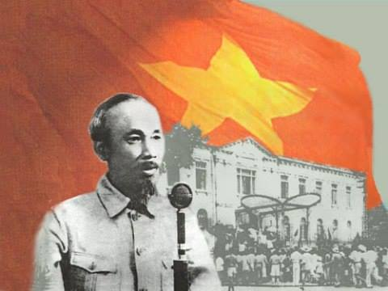

Tháng 4 năm 1946, giữa lúc đất nước đang bề bộn công việc, thì Bác vẫn dành những thì giờ quý báu về Ninh Bình dàn xếp những vấn đề đối nội, đối ngoại có lợi cho quốc gia. Vào khoảng ngày 10 đến 12, Bác đi qua thị xã Ninh Bình để xuống Phát Diệm. Lúc đó tôi là quyền Chủ tịch Uỷ ban hành chính tỉnh. Một dịp may hiếm có được đón Bác về tỉnh, nghĩ vậy, tôi mời đồng chí Uỷ viên thư ký kiêm Phó Chủ tịch và Chánh Văn phòng đến hội ý. Hai đồng chí cũng cùng chung một ý nghĩ như tôi.
Tôi phân công đồng chí Phó Chủ tịch huy động nhân dân ra tập trung đón Bác, đồng chí Chánh Văn phòng chuẩn bị cơm mời Bác, còn tôi phụ trách việc dọn dẹp văn phòng, chuẩn bị chỗ nghỉ và chỗ ngủ cho Bác qua đêm.
Đến cổng cơ quan, Bác bảo đồng chí lái xe dừng lại rồi xuống đi bộ. Vừa đi Bác vừa hỏi tình hình đời sống của nhân dân, đặc biệt đồng bào ở vùng công giáo. Chúng tôi báo cáo với Bác về những khó khăn trong tỉnh, một số nơi nông dân còn bị đói.
Bác căn dặn chúng tôi phải chú ý đoàn kết lương giáo, động viên bà con tích cực tăng gia sản xuất để chống đói, chú ý công tác diệt giặc dốt, mở nhiều lớp bình dân học vụ vào buổi trưa, buổi tối, vận động bà con đi học.
Chúng tôi mời Bác nghỉ lại cơ quan cho đỡ mệt rồi dùng bữa tối. Thực ra bữa cơm chúng tôi chuẩn bị cho Bác không có gì ngoài một con gà giò luộc, nước dấm nấu bí đao, vì lúc đó kinh phí của Uỷ ban hành chính tỉnh cũng hết sức khó khăn.
Bác nói:
- Hàng ngàn đồng bào đang chờ Bác ngoài kia, Bác không thể nghỉ ở đây đÓ ăn cơm được vì 9 giờ tối Bác đã có việc ở Chủ tịch phủ. Bây giờ các chú giúp Bác: một chú ra tập hợp đồng bào vào một ngã tư rộng gần đây để Bác ra nói chuyện với đồng bào mươi phút, một chú ra cửa hàng bánh mua cho Bác một cặp bánh giò. Còn các chú đi với Bác thì tranh thủ ăn cơm trước. Nói chuyện xong, Bác ngược Hà Nội ngay cho kịp hẹn. Trong xe Bác sẽ ăn bánh vừa đỡ tốn kém, vừa tiết kiệm được thời gian cho Bác.
Chúng tôi vâng lời Bác làm theo.
Nói chuyện với đồng bào Ninh Bình hôm đó, Bác nhấn mạnh:
- Đồng bào chú ý đoàn kết lương giáo vì âm mưu của kẻ thù luôn tìm cách chia rẽ đồng bào lương giáo.
- Đồng bào tích cực tăng gia sản xuất chống giặc đói, chống giặc dốt.
- Đồng bào chuẩn bị tinh thần chịu đựng gian khổ để chống giặc ngoại xâm bảo vệ Tổ quốc.
Kết thúc, Bác hỏi:
- Đồng bào có đồng ý thực hiện ba điều tôi nêu ra không?
- Đồng ý! Đồng ý! Hồ Chủ tịch muôn năm.
Hàng ngàn nắm tay gân guốc giơ lên hưởng ứng. Tiếng hô và tiếng vỗ tay râm ran.
Bác vẫy tay chào đồng bào rồi lên xe về Hà Nội. Xe đi được một quãng Bác mới bắt đầu dùng “bữa ăn tối” của mình.
Sưu tầm